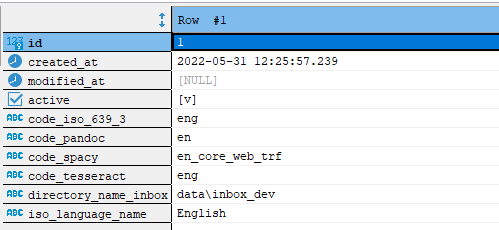

DCR - Developing - Data Model


1. Overview
Data storage is realised with the relational database management system PostgreSQL.
DCR uses the official Docker image as provided by the PostgreSQL Docker Community on DockerHub - see here.
If required, a PostgreSQL Docker image can be downloaded and a PostgreSQL Docker container can be created both with the script scripts/run_setup_postgresql.
2. Database Schema
2.1 Entity-relationship (ER) Diagram
2.2 Database Table action
The database table documents all actions that have been performed on the documents.
Example rows:

Example columns:

ER Diagram:

2.3 Database Table document
The database table documents the current status of the document.
Example rows:

Example columns:
ER Diagram:

2.4 Database Table language
This database table controls the language-related document properties during processing.
Example rows:

Example columns:

ER Diagram:

2.5 Database Table run
This database table documents the executed processing runs in detail.
Example rows:

Example columns:
ER Diagram:
2.6 Database Table token
This database table contains the tokens determined by spaCy together with selected attributes.
Example rows:
Example columns:
ER Diagram:
2.7 Database Table version
This database table is used to monitor the version status of the DCR database schema.
Example row:

Example column:
ER Diagram: